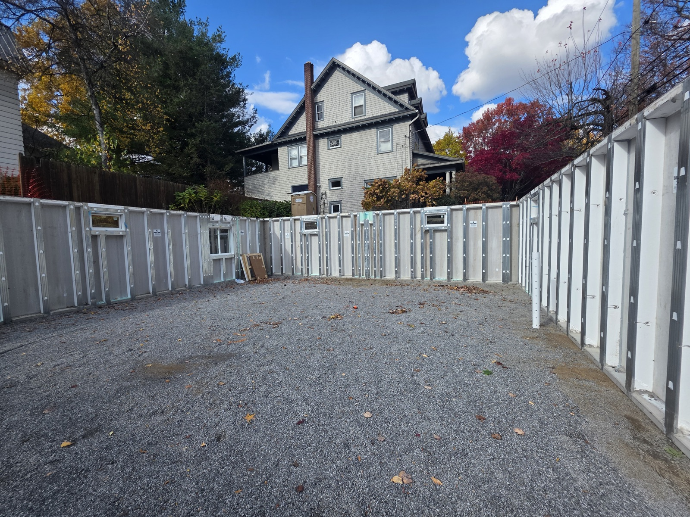

PSI Construction · Kingston & Wilkes-Barre, PA
Concrete & Foundation Contractor — Slabs, Driveways, Footings & Walls
Everything else sits on the concrete. We dig to the drawings, set footings below frost line, stand foundation walls square and level, and pour slabs that drain the right way — for our own builds and as standalone jobs.
How it goes
How we form, pour and finish concrete
-
1
Layout & excavation
Lines set, excavation to depth, stone base compacted.
We set lines and grades from the drawings and check them, then excavate to the required depth with a stable, compacted stone base beneath. Soil conditions are assessed as we dig; if they are not what the engineer assumed, we stop and resolve it rather than pour onto a problem. Utilities are located before any excavation.
-
2
Footings
Formed and poured below frost line, reinforced as the engineer specifies.
Footings are formed to the exact width and depth the engineer specifies, reinforced with rebar as detailed, and poured below the frost line so they never heave. Keyways or dowels are set for the walls above. We check elevations before and after the pour so the walls land level.
-
3
Walls
Poured or precast foundation walls stood square, level and braced.
Poured walls are formed, braced, reinforced and poured in one lift with anchor bolts and beam pockets placed to the plan; precast walls are craned in, set on the footings, and bolted and sealed at the joints. Either way the result is plumb, square and to the dimensions the framer will build on.
-
4
Waterproof & drain
Membrane, footing drain and stone before any backfill.
Below grade the wall gets a waterproofing membrane, a drainage board or protection layer, and a perforated footing drain in clean stone running to daylight or a sump. Backfill is placed in lifts with the right material. This is the part of a foundation nobody sees and the part that decides whether the basement is dry in twenty years.
-
5
Slabs & flatwork
Vapour barrier, reinforcement, pour, finish — broom, trowel or decorative.
Basement slabs, garage floors, patios, walks and driveways: compacted base, vapour barrier where required, reinforcement, control joints planned so cracks happen where we want them, and a finish to suit — broom for traction, steel-trowel for interiors, stamped or exposed-aggregate for decorative work.
-
6
Cure & hand off
Cured to strength and inspected before the next trade stands on it.
Concrete is kept moist and protected while it gains strength — covered in the cold, misted in heat — and nobody builds on it until it is ready. Required inspections are passed and documented, and the framer or next trade receives a foundation they can trust.
Work we’ve done
From our jobs
Swipe through the photographs. Tap one to see the whole job, start to finish.
Get a quote
Tell us about your concrete project
A few multiple-choice questions so we show up already knowing the job. Every one has a “not sure yet” option. Or call — 570-338-8PSI (774).